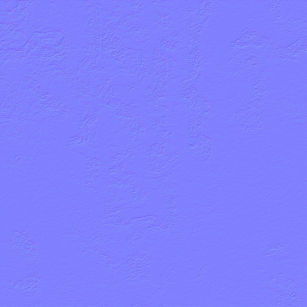

Tutorial:MapDevWithBlueprint(Forb)
Development < Tutorial:MapDevWithBlueprint(Forb)
Getting Started (Tools)
Blueprint: https://github.com/jk3064/Map-Blueprint
The only other tool really needed is "Mapconv". The other tools available are there simply to make your life easier. A list of common mapping tools are as follows:
MapConvNG - For use with Linux
SMFED (Deprecated, no longer useful)
Grout (Deprecated, no longer useful unless texture was generated with L3dt utilizing tiles)
SMD Creator (Deprecated, no longer useful)
These tools have been compiled into a zip available here: http://springfiles.com/spring/tools/mapping-tools
Keep in mind that mapconv is still being developed, so it may be necessary to update the included Mapconv to a later version, located here: http://springrts.com/phpbb/viewtopic.php?f=56&t=21458
The Components of a Map
Texture Map
Texture map size is related in pixels and in spring map size. 2x2 MapSquares in spring are equal to 1024x1024 Pixels. Texture maps mus be in multiples of 2. I.E. 2x2, 6x10, 12x16, 16x16, etc. No odd sizes are allowed (Example: 15x10).
This guide assumes that you understand how to make a texture map and it also assumes that you know how to use terrain generation software.
Commonly used terrain generation programs are:
Spring Map Edit (Does not work on 64bit machines)
L3DT
WorldMachine
Bryce3D
Carrara
Example Texture Map (generated by Carrara):
{kind=link}
Heightmap
Height Maps are Texture Map size / 8 + 1 pixel. In other words, if your texture map is 8192x8192 (16x16), 8192 / 8 + 1 = 1025x1025
You will need a good image editing program to make heightmaps. Many of the aforementioned terrain generation programs will also generate heightmaps as well, but you can draw them by hand. They can be either 8bit or 16bit greyscale PNG. If you have photoshop or the gimp, you can use these programs to help you create your heightmap.
Here is an example of a 16bit heightmap:
{kind=link}
Heightmaps work upon the idea of height according to color values. Black is the lowest, white is the heighest. In spring mapping, the waterline is defined by a negative height value. In other words, you define the heights of the map, anything below 0 is under water. So on this heightmap, you might use -50 for the lowest value and 300 for the highest height value. The aforementioned tool "Mapconv Gui (a.k.a Das Bruce's MapConv Gui) has a waterline calculator that will help you calculate the correct waterline for your map.
Metal Map
Metal Map dimensions are Texture Map size / 8 + 1 pixel. In other words, if your texture map is 8192x8192 (16x16), 8192 / 8 + 1 = 1025x1025
In Spring, metal maps are used for the built in resourcing scheme (Metal/Energy). You do not have to use this scheme. In fact, there are several games for Spring who use their own resourcing systems added on using Lua. If you are creating this map for one of those games, a metal map is not strictly necessary (in other words you can just us a black image), however, it is always nice if you can make your maps as compatible with other games as possible, but this is a choice left entirely up to you.
Metalmaps show metal areas on a map based upon the amount of red on the image (make sure red is the only color used!). On this map you can see that the "Patch Technique" is used, which is pretty common among spring maps, but you are not limited to using this scheme.
If you do want perfect metal patches, use a 6x6 pixel pencil in your image editor with a red value of 255. This combined with setting the "MaxMetal" tag in the definitions to 1, will result in a perfect 2.0 metal generation per patch (using Balanaced Annihilation values). The game use isn't the point however. The fact is that if you can predict how much each spot will output (typically), using the "MaxMetal" parameter, you can easily scale the values up and down. As an example of another extreme, Evolution RTS dictates that all metal patches will output 0.5 metal regardless of the map settings. So whether you need to put a lot of thought into your metal map values depends entirely upon the game for which you are creating the map.
Example Metal Map:
{kind=link}
Feature Map
This part is easy...
DO NOT USE THIS FOR ANY REASON WHATSOEVER!!! Just use a flat black image for the featuremap.
Feature Map dimensions are Texture Map size / 8. In other words, if your texture map is 8192x8192 (16x16), 8192 / 8 = 1024x1024
Feature maps used to be quite complicated, but all that changed with the advent of Smoth's FeaturePlacer (short featuremap history below).
Now featuremaps are use simply for the purpose of placing grass. Grass coverage is defined by blue pixels on the feature map. The more blue the pixel is (the closer to blue 255 it is), the thicker grass will be at that location. Grass is entirely optional, but can be customized via map parameters and adds a nice touch to your map.
Example Feature Map:
{kind=link}
A brief history of featuremaps
Feature maps were (and still are) a single RGB image where features such as grass, geothermal vents and trees, as well as structures, etc were "placed" using pixels on the image. This method was extremely imprecise and involved recompiling the map many times in order to simply move a tree from one location to another.
Compiling a Map (MapConv)
Texture Specifications
Texture map size is related in pixels and in spring map size. 2x2 MapSquares in spring are equal to 1024x1024 Pixels. Texture maps must be in multiples of 2. I.E. 2x2, 6x10, 12x16, 16x16, etc. No odd sizes are allowed (Example: 15x10).
Height Map dimensions are Texture Map size / 8 + 1 pixel. In other words, if your texture map is 8192x8192 (16x16), 8192 / 8 + 1 = 1025x1025
Metal Map dimensions are Texture Map size / 16 pixel. In other words, if your texture map is 8192x8192 (16x16), 8192 / 16 = 512x512
Feature Map dimensions are Texture Map size / 8. In other words, if your texture map is 8192x8192 (16x16), 8192 / 8 = 1024x1024
Using MapConv
MapConv is a command line program that is generally started via a batch file .
Below is an example set of parameters given to mapconv:
MapConv -i -l -c 0 -x 101 -n 100 -o EvoRTS-Craggy_Creek-v01.smf -t terrain.png -a height6.png -m metal.png -f feature.png -z "nvdxt.exe -dxt1a -nmips 4 -Sinc -quality_highest -file"
Once compiled, you will get 2 new files: <mapname.smt> and <mapname.smf>
Utilizing Blueprint
Unzip the blueprint archive into your Spring Maps folder.
{kind=link}
You will notice a new folder called "mapcontainer.sdd". The .sdd ending on the folder name is very important for testing as <foldername>.sdd tells spring to load map files from that folder. This way you can work on your maps without having to zip them up over and over again.
mapcontainer.sdd
Inside the map container folder you have the following file/folder structure.
LuaGaiamapconfigmaphelpermapsmapinfo.luamapoptions.luaNow, copy your compiled map files (the .smt and .smf files) into the "maps" folder.
Texture Splatting using SSMF
SSMF mapping is adding detail textures all over the map based upon specified distribution areas. This will make your map infinitely more detailed and beautiful.
Adding SSMF to a map consists of the following steps:
Distribution Map
The Distribution map is essentially an atlas telling spring where to spread your detail textures. Lets have a look at an example distribution map:

Each channel corresponds to a different texture referenced in the detail texture map. These areas are set using the channels of the image and are generally saved using the Targa format ( .tga ), sized at 1024x1024.

Save your distribution map as splatdistribution.tga, and place it in the maps folder alongside the smf and smt files.
Once you have your distribution map, you need to set up your detail textures
Detail Textures
Detail textures are made by adding a texture to each channel of an image.

There are a total of 4 texture slots available. One for R, G, B, and one for the Alpha Channel. When you have your detail textures ready, save the file as splattex.tga (Targa - 1024x1024) and place it in the maps folder alongside splatdistribution.tga
Specular Map
A specular map controls brightness and "shinyness" of your map. The more light you add to a particular portion of your specular map, the brighter and more reflective that portion of the map will be. Specular maps should be 1024x1024 and saved as specularmap.bmp. Of course placed in the maps folder with the other ssmf maps.
A specular map can cause your map to look like molten plastic. Most of us don't really use specular maps except for certain circumstances.

Grass Shading Map
By default spring's grass pulls the minimap to use for coloration of the grass patches. You can override this with grassShadingTex. Below is an example
| Grass map | Grass map in game | |
| grassmap | This is a section of grassmap image. This image applied to the entire map which determines the color of grass. | in game |
| Click image for larger picture | Click image for larger picture | |
{kind=link}
{kind=link}
Normal Map
Normal maps (in this case) are used to add "fake" 3d detail to a flat 2d image. It is a technique of manipulating lighting to give the appearance of looking at a 3d object, when actually it is just 2D.
This is what a normal map looks like:

{kind=link}
Placing Features
As previously mentioned, features can now be placed via LUA based upon a coordinate system that looks similar to this:
local features = { unitlist = { }, buildinglist = { }, objectlist = { { name = 'btreeclo_4', x = 7760, z = 112, rot = "0" }, { name = 'btreea_3', x = 2520, z = 6904, rot = "0" }, { name = 'btreeblo_5', x = 7736, z = 536, rot = "0" }, { name = 'btreeclo_1', x = 2504, z = 7112, rot = "0" }, { name = 'geovent', x = 177, z = 192, rot = "0" }, },},return features
Feature Placer
Configuring Map Parameters (Mapinfo.lua)
Admittedly, the default values used in blueprint mapinfo are awful. It may be wise for you to download another map that has used blueprint and copy and paste it's mapinfo contents into yours. However, you are also free to use the default or use the provided example.
In time, the mapinfo tags will be documented and this will like to that page. As it is the tags and values are pretty easy to figure out for the most part.
MapInfo.lua
Skyboxes
- Notes about skyboxes notes on a prerendered sky box or cube map.
Mutators
Mutators are files that add new content to exiting game files. "Spring Features" is an example of a mutator.
This section needs a proper description.
http://springrts.com/phpbb/viewtopic.php?f=13&t=21808
Archiving a Map
{kind=link}
Tools
- Frostregen's SpringMapEdit. 3D editing, Compiles and import SM2 directly. Beginner friendly but still powerful.
- MapConv Map converter program, compiles maps.
- MapConvNG Rewrite of MapConv that works on linux / 64 bit.
- Maps:Map Designer (Outdated, Deprecated) Hugh's 3D map designer. Splatting, heightmap editing, splat painting, SM3
- Starting position creator: Or you can always find out the hard way which x/y coordinates are good by starting spring and having a look at the mouse cursor coordinates.
- Coordinate Helper widget A small widget that helps you with finding coordinates ie for start positions. Every time you put down a marker it will log its position in Infolog.txt and also in MAPNAME_coordinates.txt Helpfull if you need to get lots of map coordinates and do not want to write them down by hand. (it writes SpawnResource in front of the coordinates but you can ignore or edit the widget)
Minimal barebones template with no extras
If you want a completely barebones template with no extra configuration needed (useful for testing), Extract the blueprint files, then delete everything except mapinfo.lua and everything in maps folder (except your .smf and .smt files). Next copy paste following to mapinfo.lua (not the most minimal but minimal enough):
local mapinfo = {
name = "MyMap",
shortname = "",
description = "",
author = "",
version = "",
modtype = 3, --// 3=map
teams = {
[0] = {startPos = {x = 8, z = 8}},
[1] = {startPos = {x = 16, z = 16}},
},
}
return mapinfo
In summary: maps folder with .smf.and .smt files and single mapinfo.lua file. You should be now able to test your map immediately (if files are placed to mapcontainer.sdd).